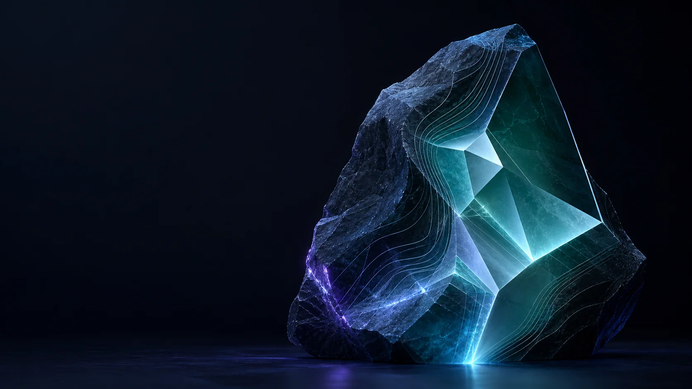
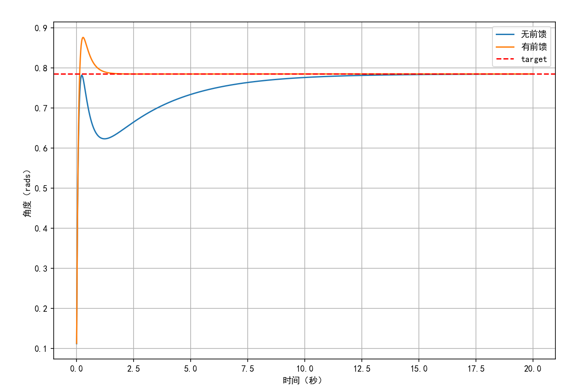

长期主线
01
备战 2028 年研究生入学考试
建立稳定的学习节奏，用长期积累换取更大的选择空间。
南京 自动化 2024 级
南京邮电大学自动化专业本科生。正在为考研、全国大学生数学竞赛和单腿跳跃机器人仿真持续积累，希望有一天走进机器人实物组，把模型与控制落到真实机器上。
像对待艺术品一样雕刻自己

不是等待被定义，
而是一刀一刀接近理想。
01 / ABOUT
我不会因为璞玉还带着粗粝的外皮，就责问它为什么不是天生的艺术品。
真正重要的是静下心来，持续打磨，让自己一点点趋近理想的状态。
我最看重自己的，是执着与韧性。面对陌生问题，我愿意把它拆开、试错、记录，再从一次次不完整的结果里继续向前。
现在的我仍在打基础：学数学、做控制仿真、准备考研。履历不需要被包装得很长，重要的是每一步都真实，每一次迭代都比上一次更接近答案。
02 / NOW
没有“突然变强”的故事。现在的主线，是把数学基础、控制知识和工程实践一点点接起来。
01
建立稳定的学习节奏，用长期积累换取更大的选择空间。
02
在 MuJoCo 中从关节级控制起步，逐步走向足端控制、接触检测与跳跃状态机。
03
把竞赛当作检验基础、训练推理与保持专注的硬反馈。
03 / SELECTED WORK
这些项目没有被包装成“改变世界”。它们记录的是我如何理解问题、搭建系统，再让它真正运行。
从关节控制走向跳跃的 MuJoCo 单腿机器人仿真
先让最基础的控制循环可靠，再谈跳跃。当前已经完成双关节腿模型、关节与执行器映射、关节空间 PD 控制、CSV 日志、结果绘图和交互查看器。

一款离线优先的任务与专注工具，提供 Android 和 Windows 客户端。任务、专注记录、统计和随手记下的灵光都保存在本机；灵光可归档，也可转成正式待办。
04 / DIRECTION
我希望未来进入东南大学的机器人实物组。吸引我的不只是屏幕上的曲线，而是让模型、控制器、传感器和机械结构在真实世界里共同工作。
目标还很远，所以当下要做的事情很具体：把数学学扎实，把控制仿真做清楚，把每个项目留下可复现的过程。
自动化专业 · 本科
数学竞赛 · 控制仿真 · Android 工程
目标 · 东南大学机器人实物组
技术之外，我喜欢打羽毛球。离开屏幕，回到身体、节奏和下一拍。
05 / CONTACT